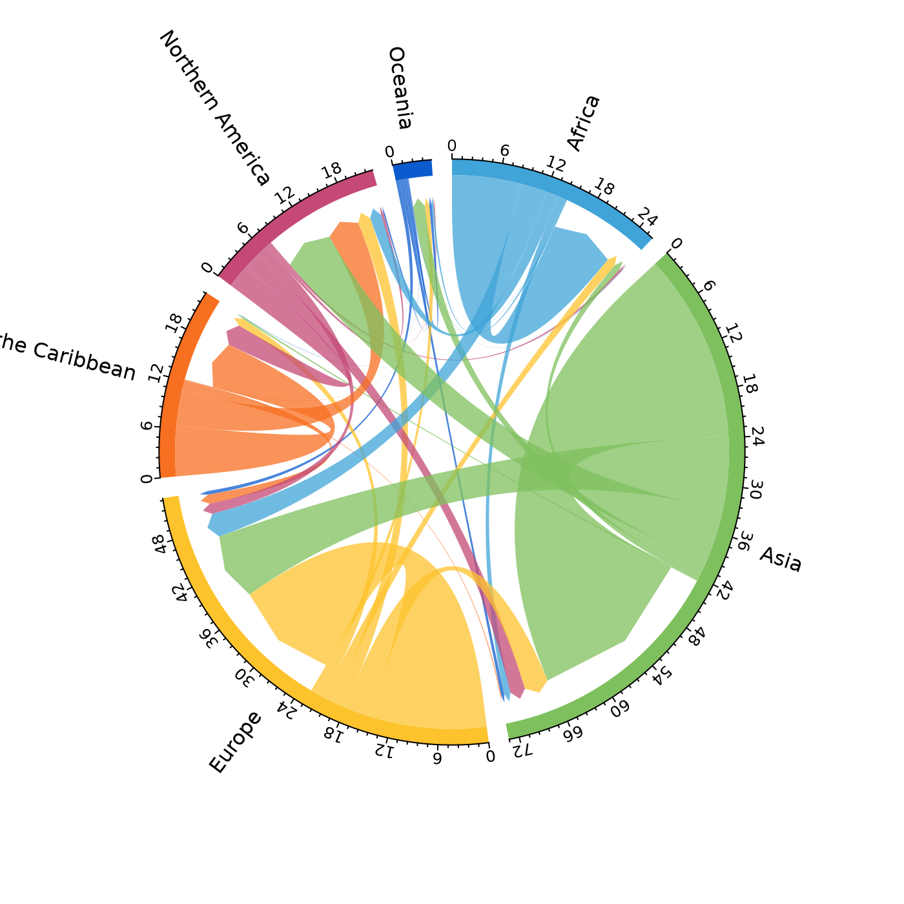
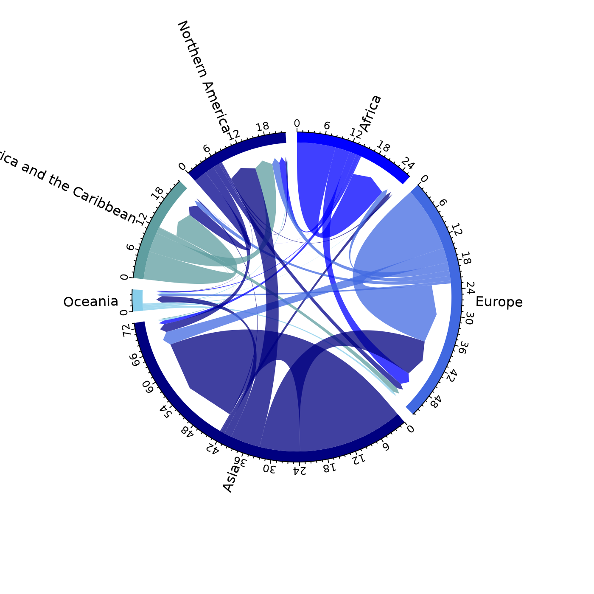
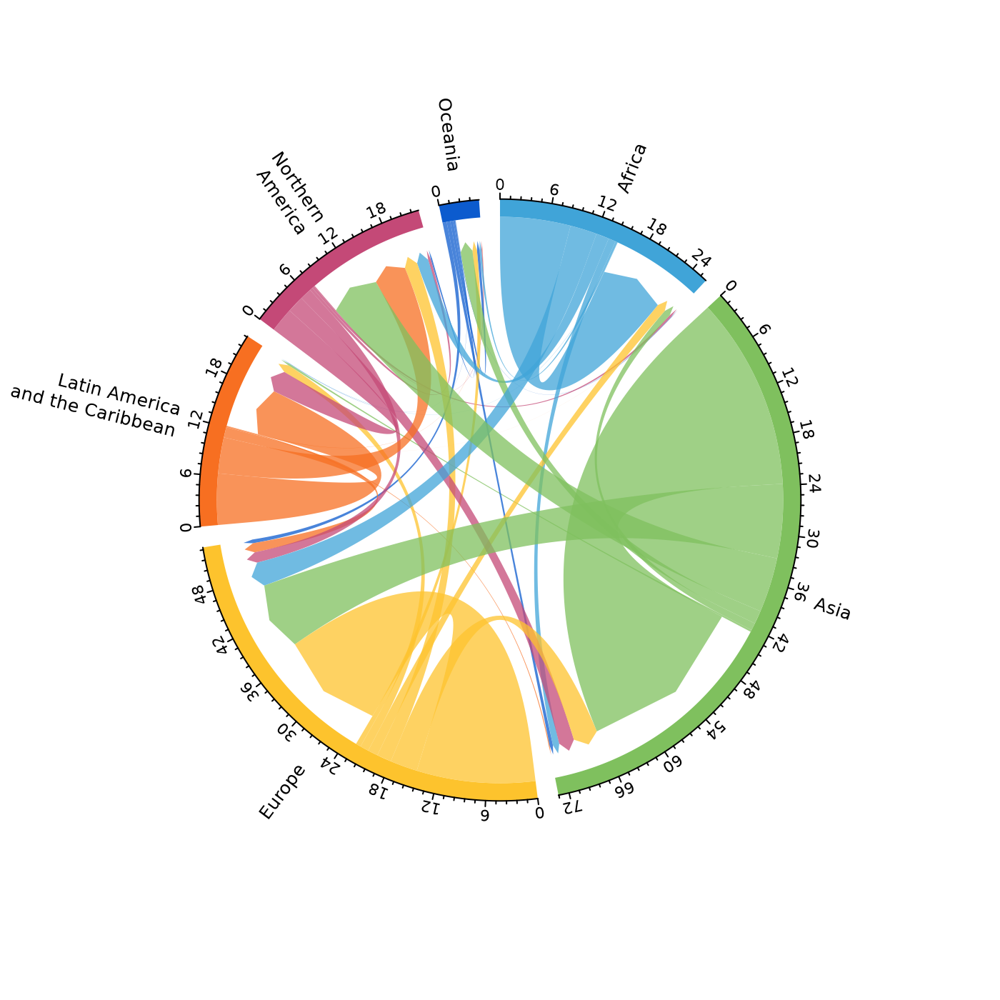
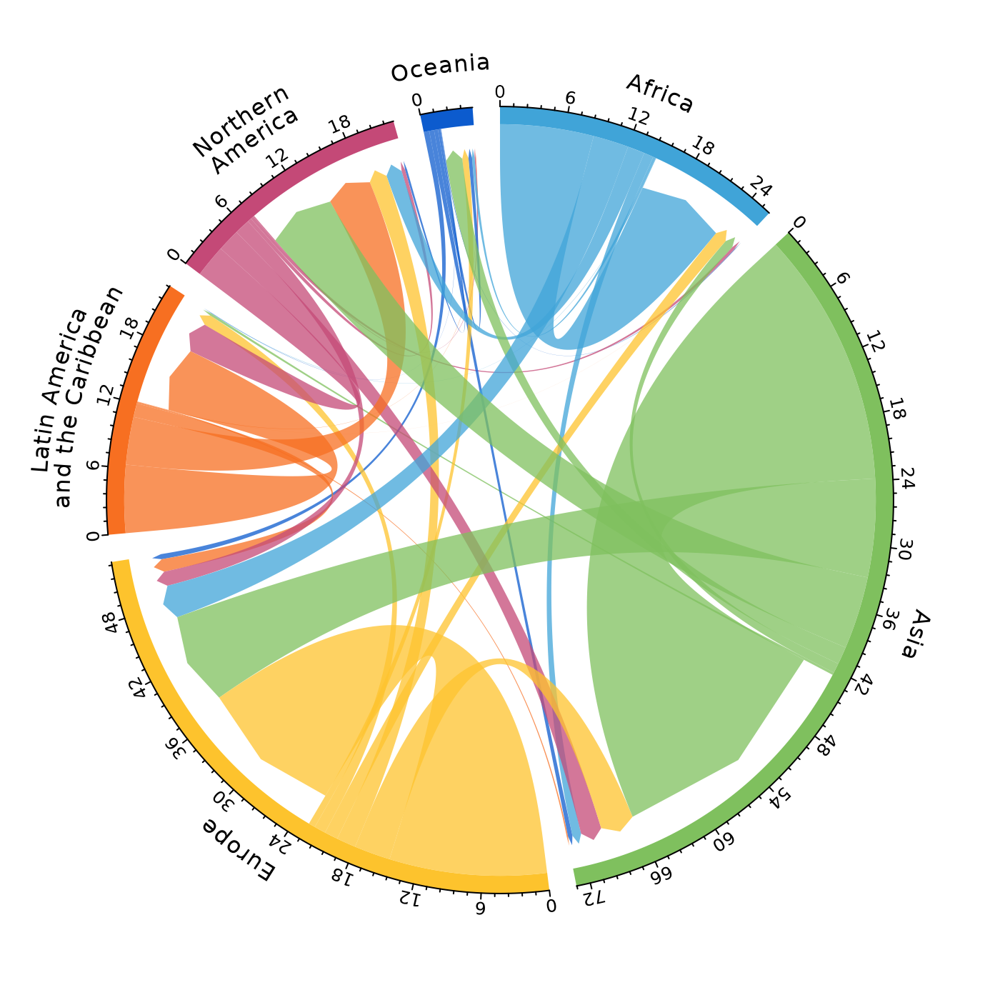

Adaption of circlize::chordDiagramFromDataFrame() with defaults set to allow for more effective visualisation of directional origin-destination data
Usage
mig_chord(
x,
lab = NULL,
lab_bend1 = NULL,
lab_bend2 = NULL,
label_size = 1,
label_nudge = 0,
label_squeeze = 0,
axis_size = 0.8,
axis_breaks = NULL,
...,
no_labels = FALSE,
no_axis = FALSE,
clear_circos_par = TRUE,
zero_margin = TRUE,
start.degree = 90,
gap.degree = 4,
track.margin = c(-0.1, 0.1),
points.overflow.warning = FALSE
)Arguments
- x
Data frame with origin in first column, destination in second column and bilateral measure in third column
- lab
Named vector of labels for plot. If
NULLwill use names fromd- lab_bend1
Named vector of bending labels for plot. Note line breaks do not work with
facing = "bending"in circlize.- lab_bend2
Named vector of second row of bending labels for plot.
- label_size
Font size of label text.
- label_nudge
Numeric value to nudge labels towards (negative number) or away (positive number) the sector axis.
- label_squeeze
Numeric value to nudge
lab_bend1andlab_bend2labels apart (negative number) or together (positive number).- axis_size
Font size on axis labels.
- axis_breaks
Numeric value for how often to add axis label breaks. Default not activated, uses default from
circlize::circos.axis()- ...
Arguments for
circlize::chordDiagramFromDataFrame().- no_labels
Logical to indicate if to include plot labels. Set to
FALSEby default.- no_axis
Logical to indicate if to include plot axis. Set to
FALSEby default.- clear_circos_par
Logical to run
circlize::circos.clear(). Set toTRUEby default. Set toFALSEif you wish to add further to the plot.- zero_margin
Set margins of the plotting graphics device to zero. Set to
TRUEby default.- start.degree
Argument for
circlize::circos.par().- gap.degree
Argument for
circlize::chordDiagramFromDataFrame().- track.margin
Argument for
circlize::chordDiagramFromDataFrame().- points.overflow.warning
Argument for
circlize::chordDiagramFromDataFrame().
Value
Chord diagram based on first three columns of x. The function tweaks the defaults of circlize::chordDiagramFromDataFrame() for easier plotting of directional origin-destination data. Users can override these defaults and pass additional tweaks using any of the circlize::chordDiagramFromDataFrame() arguments.
The layout of the plots are designed to specifically work on plotting images into PDF devices with widths and heights of 7 inches (the default dimension when using the pdf function). See the end of the examples for converting PDF to PNG images in R.
Fitting the sector labels on the page is usually the most time consuming task. Use the different label options, including line breaks, label_nudge, track height in preAllocateTracks and font sizes in label_size and axis_size to find the best fit. If none of the label options produce desirable results, plot your own using circlize::circos.text having set no_labels = TRUE and clear_circos_par = FALSE.
Examples
library(dplyr)
library(tidyr)
library(tibble)
library(countrycode)
#' # download Abel and Cohen (2019) estimates
f <- url("https://ndownloader.figshare.com/files/38016762") %>%
read.csv() %>%
as_tibble()
f
#> # A tibble: 307,833 × 9
#> year0 orig dest sd_drop_neg sd_rev_neg mig_rate da_min_open da_min_closed
#> <int> <chr> <chr> <int> <int> <dbl> <dbl> <dbl>
#> 1 1990 BDI BDI 0 0 0 0 0
#> 2 1990 COM BDI 0 0 0 0 0
#> 3 1990 DJI BDI 0 0 0 0 0
#> 4 1990 ERI BDI 0 0 0 0 0
#> 5 1990 ETH BDI 0 0 0 0 0
#> 6 1990 KEN BDI 30 30 75.7 51.3 207.
#> 7 1990 MDG BDI 0 0 0 0.03 0
#> 8 1990 MWI BDI 0 0 0 0 0
#> 9 1990 MUS BDI 0 0 0 0.06 0
#> 10 1990 MYT BDI 0 0 0 0 0
#> # ℹ 307,823 more rows
#> # ℹ 1 more variable: da_pb_closed <dbl>
# use dictionary to get region to region flows
d <- f %>%
mutate(
orig = countrycode(sourcevar = orig, custom_dict = dict_ims,
origin = "iso3c", destination = "region"),
dest = countrycode(sourcevar = dest, custom_dict = dict_ims,
origin = "iso3c", destination = "region")
) %>%
group_by(year0, orig, dest) %>%
summarise_all(sum) %>%
ungroup()
d
#> # A tibble: 216 × 9
#> year0 orig dest sd_drop_neg sd_rev_neg mig_rate da_min_open da_min_closed
#> <int> <chr> <chr> <int> <int> <dbl> <dbl> <dbl>
#> 1 1990 Africa Africa 4297155 7845806 5.47e6 6872677. 7728373.
#> 2 1990 Africa Asia 240464 258816 7.24e5 283708. 554047.
#> 3 1990 Africa Europe 555826 664496 1.91e6 830461. 2190967.
#> 4 1990 Africa Latin… 1505 2709 7.81e3 9043. 56747.
#> 5 1990 Africa North… 289058 301706 2.23e5 321650. 783334.
#> 6 1990 Africa Ocean… 21550 23570 6.59e4 30186. 165598.
#> 7 1990 Asia Africa 94088 158903 2.00e5 102036. 93577.
#> 8 1990 Asia Asia 3616112 8617460 1.44e7 6969956. 10337980.
#> 9 1990 Asia Europe 1496141 2322839 5.48e6 2851352. 4214903.
#> 10 1990 Asia Latin… 14316 14343 1.07e5 20177. 136270.
#> # ℹ 206 more rows
#> # ℹ 1 more variable: da_pb_closed <dbl>
# 2015-2020 pseudo-Bayesian estimates for plotting
pb <- d %>%
filter(year0 == 2015) %>%
mutate(flow = da_pb_closed/1e6) %>%
select(orig, dest, flow)
pb
#> # A tibble: 36 × 3
#> orig dest flow
#> <chr> <chr> <dbl>
#> 1 Africa Africa 8.69
#> 2 Africa Asia 0.896
#> 3 Africa Europe 3.31
#> 4 Africa Latin America and the Caribbean 0.0361
#> 5 Africa Northern America 1.59
#> 6 Africa Oceania 0.264
#> 7 Asia Africa 0.907
#> 8 Asia Asia 23.8
#> 9 Asia Europe 9.14
#> 10 Asia Latin America and the Caribbean 0.233
#> # ℹ 26 more rows
# pdf(file = "chord.pdf")
mig_chord(x = pb)

# dev.off()
# file.show("chord.pdf")
# pass arguments to circlize::chordDiagramFromDataFrame
# pdf(file = "chord.pdf")
mig_chord(x = pb,
# order of regions
order = unique(pb$orig)[c(1, 3, 2, 6, 4, 5)],
# spacing for labels
preAllocateTracks = list(track.height = 0.3),
# colours
grid.col = c("blue", "royalblue", "navyblue", "skyblue", "cadetblue", "darkblue")
)

# dev.off()
# file.show("chord.pdf")
# multiple line labels to fit on longer labels
r <- pb %>%
sum_region() %>%
mutate(lab = str_wrap_n(string = region, n = 2)) %>%
separate(col = lab, into = c("lab1", "lab2"), sep = "\n", remove = FALSE, fill = "right")
#> Asking for more lines than words
#> Asking for more lines than words
#> Asking for more lines than words
#> Asking for more lines than words
r
#> # A tibble: 6 × 8
#> region out_mig in_mig turn net lab lab1 lab2
#> <chr> <dbl> <dbl> <dbl> <dbl> <chr> <chr> <chr>
#> 1 Africa 6.10 2.52 8.62 -3.58 "Afri… Afri… NA
#> 2 Asia 18.7 6.93 25.6 -11.7 "Asia" Asia NA
#> 3 Europe 8.11 15.7 23.8 7.59 "Euro… Euro… NA
#> 4 Latin America and the Caribbean 5.90 4.39 10.3 -1.51 "Lati… Lati… and …
#> 5 Northern America 6.96 14.8 21.7 7.83 "Nort… Nort… Amer…
#> 6 Oceania 1.26 2.67 3.92 1.41 "Ocea… Ocea… NA
# pdf(file = "chord.pdf")
mig_chord(x = pb,
lab = r %>%
select(region, lab) %>%
deframe(),
preAllocateTracks = list(track.height = 0.25),
label_size = 0.8,
axis_size = 0.7
)

# dev.off()
# file.show("chord.pdf")
# bending labels
# pdf(file = "chord.pdf")
mig_chord(x = pb,
lab_bend1 = r %>%
select(region, lab1) %>%
deframe(),
lab_bend2 = r %>%
select(region, lab2) %>%
deframe()
)

# dev.off()
# file.show("chord.pdf")
# convert pdf to image file
# library(magick)
# p <- image_read_pdf("chord.pdf")
# image_write(image = p, path = "chord.png")
# file.show("chord.png")